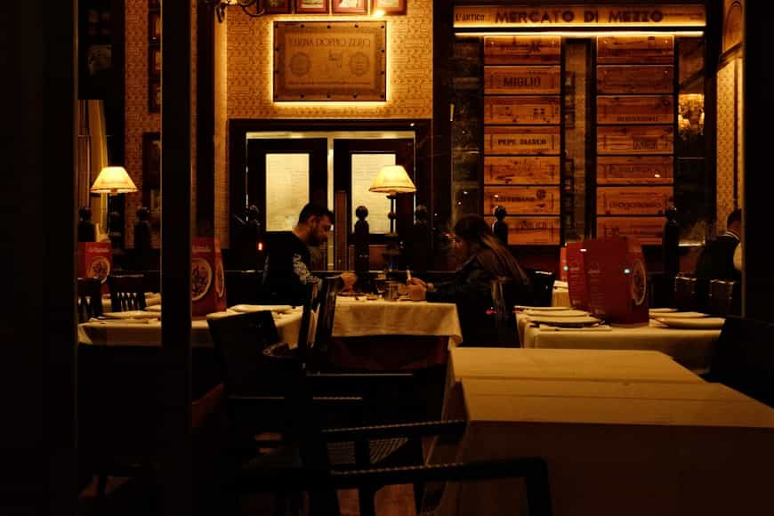
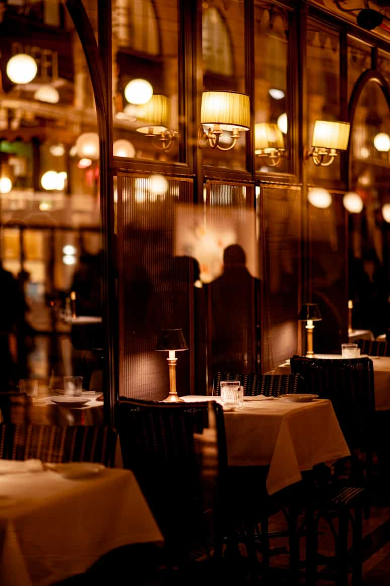
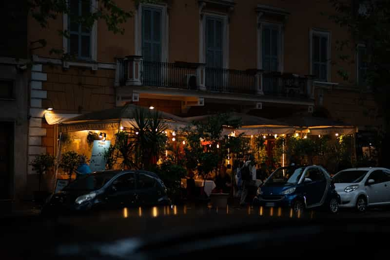
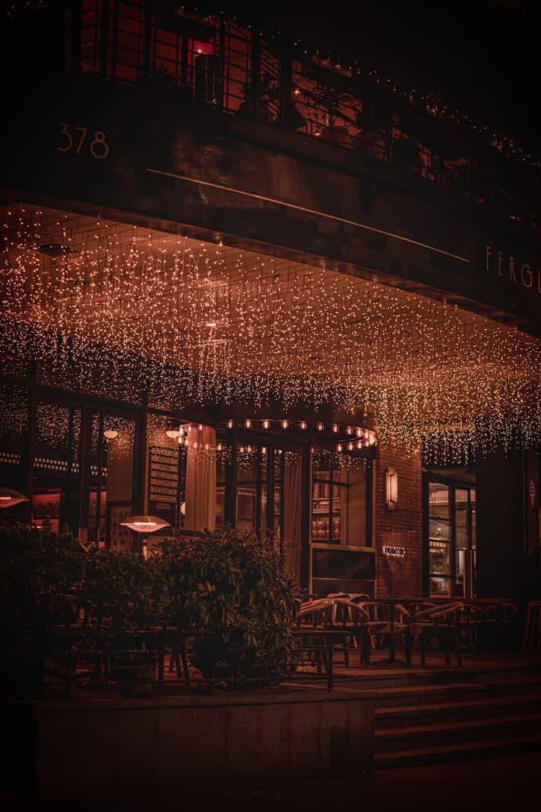
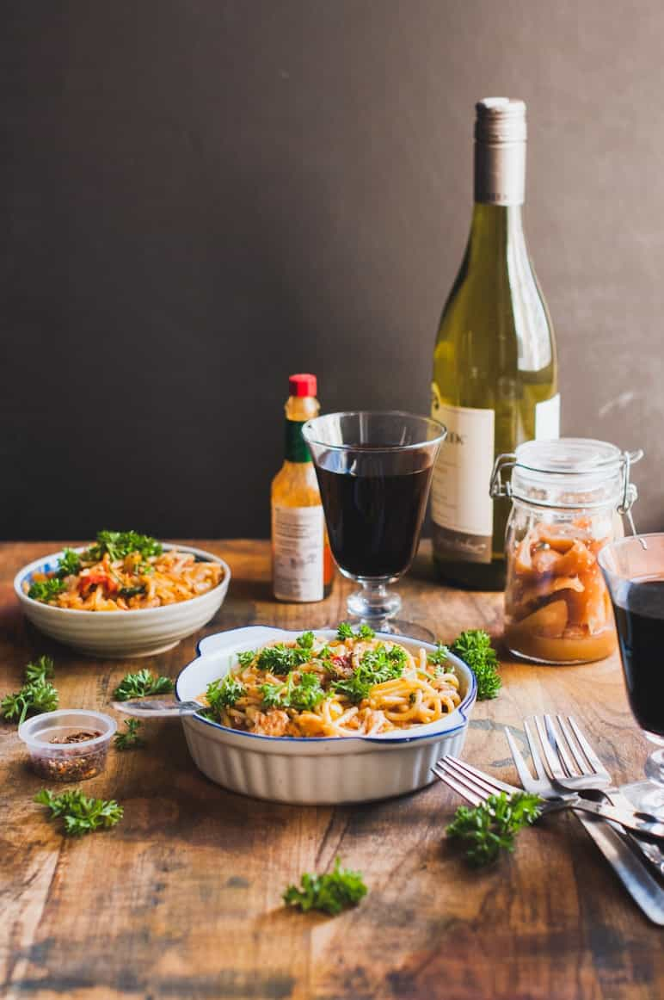

About Us
Enjoy delicious meals made with passion.
Welcome to La Veranda
La Veranda Italian Cuisine was founded with a passion for bringing authentic Italian flavors to life. Inspired by traditional family recipes, we create dishes that capture the essence of Italy.
From handcrafted pasta to wood-fired pizzas, every meal is prepared with fresh ingredients and a touch of love. Our restaurant provides a warm and welcoming atmosphere for everyone.
Over the years, we have grown into a beloved destination for food lovers, offering not just meals but unforgettable dining experiences.


Our Mission
Our mission is to provide high-quality meals using fresh ingredients while delivering exceptional service.
We believe food should not only satisfy hunger but also create memorable experiences.
Meet Our Chef

Chef John Deo brings years of experience and passion to La Veranda Italian Cuisine. Trained in Italy, he combines traditional recipes with modern techniques to create flavorful and authentic dishes. His dedication to quality and fresh ingredients ensures that every meal is carefully prepared to deliver a memorable dining experience.
Our Restaurant





